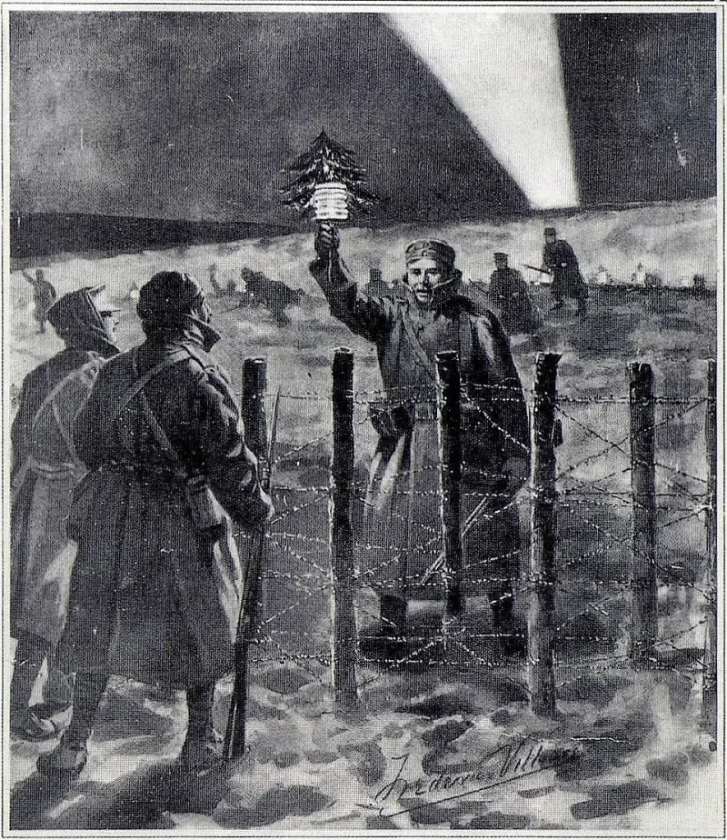

The Watchtower's own publications admit these facts. You can make this point from their library alone.
For sixty years the teaching was simple. The people alive in 1914 would live to see Armageddon.
It was printed on the front of every Awake! until Oct 22, 1995.
The magazine, it said, built confidence in a new world coming "before the generation that saw the events of 1914 passes away."
In 1995 the word generation became wicked mankind in general (The Watchtower, Nov 1, 1995). The masthead promise vanished from the very next issue.
In 2008 it became the anointed as a class. In 2010 it became two groups whose lives overlap.
The 2014 Watchtower of Jan 15 (p. 31) settled the final shape.
Paraphrase sounds like mockery, so read it as printed. "Jesus evidently meant that the lives of the anointed who were on hand when the sign began to become evident in 1914 would overlap with the lives of other anointed ones who would see the start of the great tribulation" (The Watchtower, Apr 15, 2010, p.
10).
Matthew 24:34 is a hard verse, and it has puzzled the whole church. Commentators of every stripe redefine the phrase.
The word is elastic in Scripture, and Exodus 1:6 covers people of different ages. So a group of anointed whose lives overlap is a possible reading.
And each change was made in public, which is correction, not failed prophecy. No date was ever attached.
They admit this themselves, because they printed every stage. The difference from other churches is what was staked on it.
Six decades of urgency, careers and choices about having children. The overlapping version now stretches to roughly 2075 and cannot be tested by anyone alive.
"Would you read me the 2010 definition of the generation, straight out of the magazine? I want to be sure I have it right."

Matthew 24:34 is a hard verse. Scholars of all kinds redefine 'this generation.'
The Watchtower presents each change as a better grasp of a genuinely hard text. Matthew 24:34 has puzzled all of Christendom. Writers from preterists to futurists redefine 'this generation' too.
The word is elastic in Scripture. Exodus 1:6 speaks of Joseph's generation. It covers people of different ages. So a group of anointed whose lives overlap is a possible reading. The changes also show a willingness to correct in public. The other option was to drop the nearness of the end quietly. On this account it is the light getting brighter (Proverbs 4:18). It is not failed prophecy, since no date was attached.
They admit it themselves. The 2010 wording cannot be tested until about 2075.
Every stage is printed in the Society's own magazines. That includes the masthead promise, and its deletion in mid-1995. The Watchtower cannot dispute this record, because it published it.
The steelman fails on how exact the teaching was. Other churches puzzle over Matthew 24:34 as a matter of reading. The Watchtower staked six decades of urgency on a fixed reading. Careers rode on it. So did choices about having children. Then it swapped the reading the year it expired, and twice more within fifteen years.
The overlapping-generations wording is quoted word for word here, because paraphrase sounds like mockery. It makes 'generation' mean something no lexicon supports. And it puts the teaching beyond testing until roughly 2075. Quote the 2010 sentence and let it do the work.